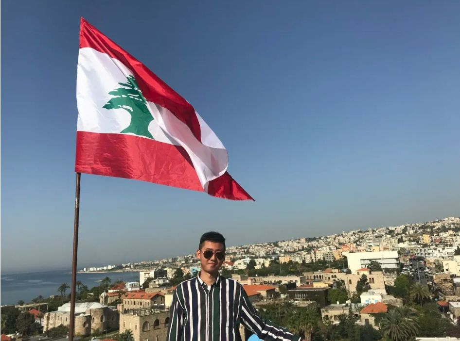
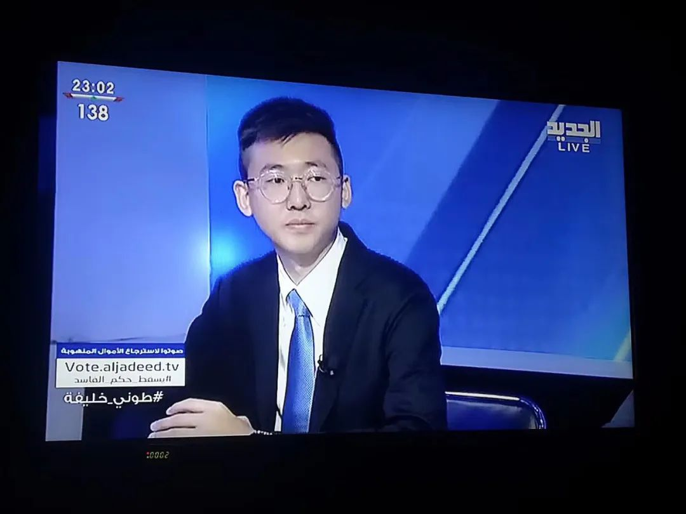
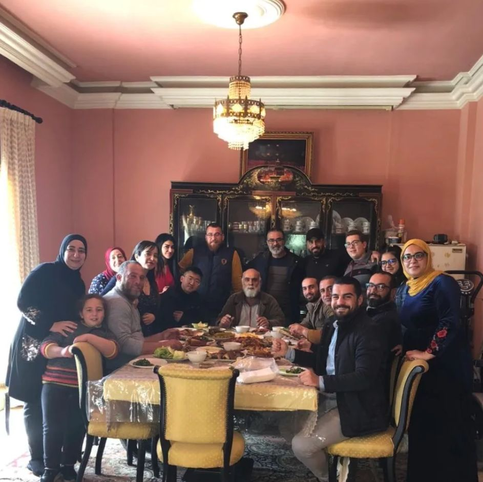
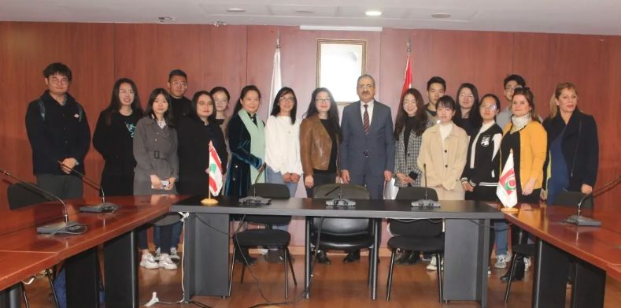
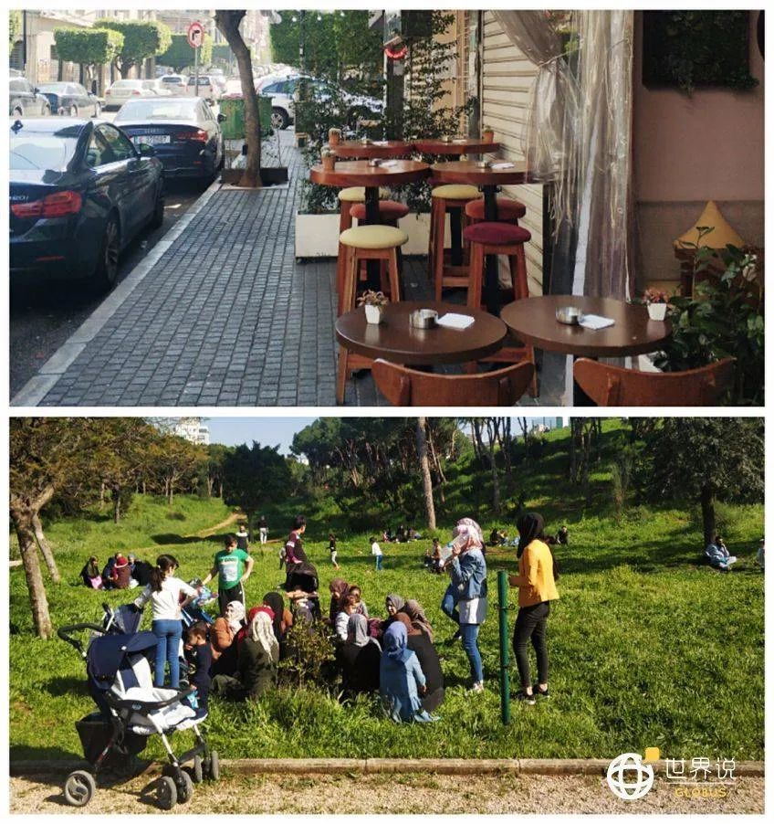
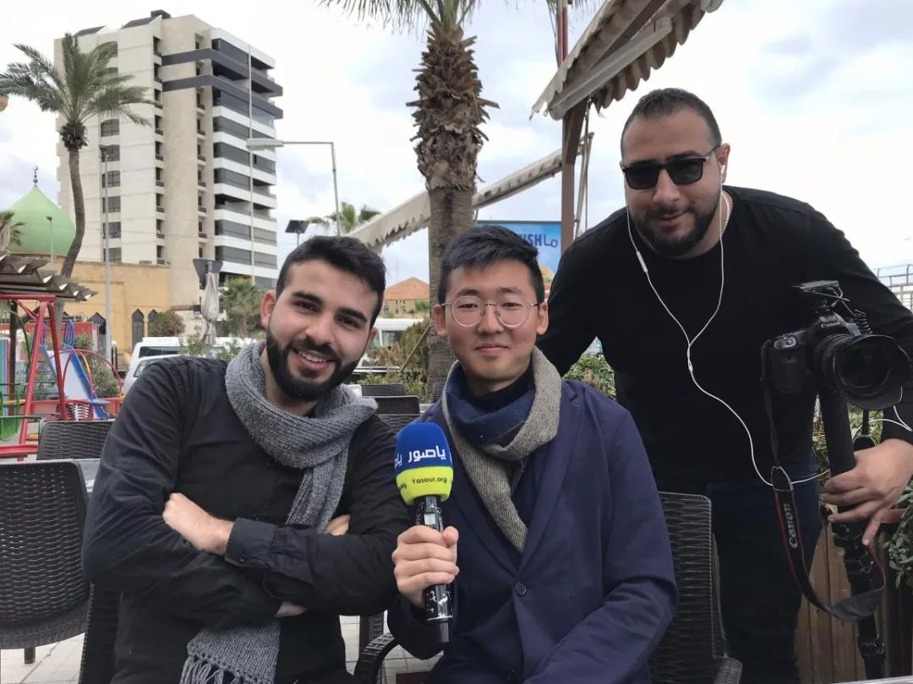

“网红”医生余昌平：重症归来
原文链接 备份链接 ********** *****武汉大学人民医院呼吸内科副主任医师，52岁的余昌平1月中旬确诊了新冠肺炎。**********在与病毒搏斗的40天里，余昌平一度病危，但他用乐观的心态去治疗，录制短视频科普“新冠病毒”， …

病毒可以很快消除，但是消除种族歧视的路还很长。困难固然艰巨，但每个中国人都该做点什么。
**记 者 | 吴 雪
**
受访者 | 艾米尔
我是黎巴嫩大学博士学院的中国访问学者艾米尔，本科毕业于上海外国语大学东方语学院阿拉伯语专业，去年9月份来到黎巴嫩时，和当地朋友一起住在舒夫县的沙希姆镇小镇上。
半年来，我生活得一直很快乐。2月上旬，黎巴嫩媒体开始对中国新冠肺炎疫情进行报道，并大肆渲染恐慌情绪，部分黎巴嫩民众对像我一样长着东亚面孔的人，都不是很友好。
记得有一次，我走在贝鲁特的大街上，旁边开车的人疾驰而过，看到我时竟然朝着我大喊了一句“Kurūnā”，这个词在阿拉伯语中是新冠病毒的意思。出门遭遇这种歧视性的侮辱，我一开始并没有放在心上，很生气的话，会冲过去找他人当面对质，对方解释说“自己在玩笑话，别当真”。我清楚这并不代表所有黎巴嫩人的想法。

艾米尔在黎巴嫩留学 受访者供图
但让我心寒的是，每当我找同学借东西，或走在路上碰到同学的时候，他们会不自觉地躲得远远的，并向我投来异样的目光。我虽然能理解他们的害怕，但这种歧视三番五次地出现在我的生活中，我也不愿意再沉默。
某天，我从贝鲁特乘坐大巴车返回居住的黎巴嫩山省，在车里刚刚坐定，一个黎巴嫩市民上了车，看了我一眼，用调侃的语气讲了一句话：“今天‘新冠病毒’和我们一起坐车回山上。”看到我和他一站下车，那人又不屑地讲了一遍：“‘新冠病毒’和我们一起下车了。”
我当即找他对质：“你说谁是病毒？麻烦你再说一遍？”对方知道我会阿拉伯语后，吓得不敢说话，我非常严肃地告诉他：“我们中国人不是病毒，请你不要再拿这件事开玩笑。”回到家后，当地朋友听了事件的过程，对我表示抱歉，他说这不是黎巴嫩人的想法。

黎巴嫩街头的民众
沙希姆镇的人口不多，作为唯一的中国人，当地居民肯定都已经认识我了。他们明知我与新冠病毒毫无瓜葛，还说出这样歧视性的话语，我实在没办法接受。而在社交媒体上我也看到过许多华人朋友，多少都遭遇过类似的歧视。
2月27日，我有了一个初步的想法，准备录制一段“反对新冠病毒歧视”的视频，发布在“脸书”上，为中国人正名。拍摄视频的地点就在我朋友家的屋顶。那天，我对着镜头，请黎巴嫩人将心比心，能够正确看待新冠肺炎，不要仅仅出于焦虑和未知的恐惧，就对中国人抱有歧视。
艾米尔制作视频破除偏见，“走红”阿拉伯国家
我知道有些人会说“新冠病毒”是在开玩笑，但这并不好笑，为了让他们更加明白，我还打了一个比方，“如果你的母亲生病了，我可以拿她开玩笑吗？不可以。中国就是我们中国人的母亲，她现在生病了，我们希望她尽快痊愈”。
我做这个视频的目的，第一是让出门在外的中国人，不会被人说三道四；第二希望黎巴嫩等阿拉伯国家的民众意识到，这些歧视性的话语只会损害民众间的感情，不利于中黎两国关系的发展。
视频发出后，短短2天内我的脸书账号就已经被浏览了5万余次。与此同时，几位黎巴嫩人将它转到了当地的一些小媒体上，之后一家总部在阿联酋的媒体“Al-Hadath”在6点档的晚间新闻播出了这段视频。

艾米尔接受Al-Jadeed电视台采访 受访者供图
之后，黎巴嫩三大主要电视频道之一的Al-Jadeed以及几家黎巴嫩新闻网站不仅采访了我，还请我去录制电视节目。
2月29日，黎巴嫩议会议员比拉勒·阿卜杜拉（Bilal Abdallah）看到这则视频后，邀请我去他家做客，并一起录制了访谈视频。议员对我表示同情，并呼吁黎巴嫩民众停止因新冠肺炎疫情而歧视中国人，号召黎巴嫩支持中国抗击新冠疫情。沙特阿拉比亚电视台对这一互动事件进行了直播。

阿拉比亚电视台节目截图 受访者供图

王克俭大使与阿卜杜拉议员的互动 受访者供图
比拉勒·阿卜杜拉议员在黎巴嫩很有影响力，他拍了视频传到了推特上，很快引发了大量关注。值得注意的是，中国驻黎巴嫩大使王克俭也转发了这一视频，并感谢阿卜杜拉议员反对因新冠病毒歧视中国人的立场。包括之前埃及歧视中国人的事件，当地的电视台也播出了我的视频，我感觉他们把我当成了中东地区“反歧视第一人”。
我一下子成了“网红”，被大众所熟知。3月1日，我接到了一份特别的邀请，来自黎巴嫩青年Adham Alsayed，他是一位在武汉求学的华中科技大学在读博士。他在中国生活了5年，接受过上百家国内外媒体的采访。疫情暴发后，Adham Alsayed主动选择留在武汉。用自己的所见所闻，向阿拉伯人和世界讲述中国抗疫的能力和魄力，并向世界传递一个真实的中国。

艾米尔受邀到黎巴嫩在华留学生Adham Alsayed家中做客 受访者供图
他打来电话，告诉我，想邀请我去自己在黎巴嫩的家中做客、共进午餐。Adham Alsayed的家人十分热情好客，对中国人特别友好。我在Adham Alsayed家受到了热情款待，还品尝了炸鱼、手抓鸡肉饭等当地美食。他的家人对我受到歧视性的语言和不友好的行为，表示抱歉，他们很难过，让我不要放在心上，并对我的“反歧视行动”表示了支持。
事实上，黎巴嫩人民向来对中国客人非常友善。
后来我就读的黎巴嫩大学，校长福阿德·阿尤布（Fouad Ayoub）也发表了声明，就中国留学生因新冠肺炎疫情遭到该校学生或其他黎巴嫩民众的歧视一事表示歉意，称这些歧视性的举动是个人行为，不能反映全体黎巴嫩人民的道德水准。福阿德·阿尤布还接见了所有黎大的中国留学生和中文教师，支持中国抗疫。
此外，黎巴嫩最大在野党——前总理萨阿德·哈里里领导的未来运动则号召民众切勿将新冠病毒政治化。

黎巴嫩大学校长福阿德·阿尤布接见黎大中国留学生和中文教师 受访者供图
这件事后，我发现自己的力量虽然渺小，但还是可以改变周围人的。留学生和华人华侨的生活情况有所改变——首先我们对自己更有自信，敢于外出了；其次当地人对亚洲面孔也多了份尊重。
虽然黎巴嫩人在脸书上也表达过自己对疫情的恐慌，但现实中大家的防护意识还远远不够。同住的当地朋友一家对新冠肺炎的态度就不是很重视，我让他们戴口罩、勤洗手、多消毒。但在黎巴嫩人的文化理念里，只有生病的人才戴口罩，所以街上戴口罩的人非常少。而且，正常的家庭聚会、周五穆斯林主麻礼拜和周日基督徒教会礼拜都还在正常进行。

围坐在公园里晒太阳的人们，似乎并未受到影响
但最近几天，有了一点变化，出门戴口罩的人比例多了一些，黎巴嫩手机运营商的标语改成“stay home”，贝鲁特沿海的人行道，徒步的人群，也被警察用大喇叭赶回家了。在黎巴嫩，只有一家公立医院免费收治新冠肺炎患者，其余私立医院都要自费15万黎镑（约合600元人民币）核酸检测费用，这对于民众来说负担挺大的。
原本我的公派是到5月份结束的，现在学业是否受影响或者延期，只能等通知。我现在大部分时间都在家看书、整理资料，为研究课题做准备。我研究的课题是“一带一路”背景下中国和黎巴嫩经贸关系发展研究，课题方面可能会被导师“催进度”。

艾米尔接受黎巴嫩最大网络媒体Yasour的采访 受访者供图
当地时间21日黎巴嫩总理哈桑·迪亚卜确认，黎巴嫩新冠肺炎确诊总人数已上升为230人，当天晚间，黎巴嫩安全部队介入并采取强制措施，禁止居民外出和集会。黎巴嫩进入新冠肺炎疫情暴发期。
这场疫情暴露出来了很多问题，比如种族主义，对华歧视等。病毒可以很快消除，但是消除种族歧视的路还很长。困难固然艰巨，但每个中国人都该做点什么。


· 口述实录 | 中国援外抗疫包机MU7041机长：加油，意大利！请照顾好我们的医生
· 我在海外 | 眼睁睁地看着巴伐利亚州的“新冠确诊”包围圈对我家越缩越小
新民周刊所有平台稿件， 未经正式授权
一律不得转载、出版、改编或进行
与新民周刊版权相关的其他行为，违者必究


原文链接 备份链接 ********** *****武汉大学人民医院呼吸内科副主任医师，52岁的余昌平1月中旬确诊了新冠肺炎。**********在与病毒搏斗的40天里，余昌平一度病危，但他用乐观的心态去治疗，录制短视频科普“新冠病毒”， …
原文链接 备份链接 德国罗伯特·科赫研究所RKI所长威勒（Wieler）预计，德国在两三个月内确诊人数将会超过一千万。我不希望这个数字成真，德国并不像国内的社区，有居委会大妈、有网格员关心着你，给你送吃的送喝的，如果诺因基兴镇的食物断货， …
原文链接 备份链接 新冠病毒肺炎（COVID-19）不分国界。想要帮助全人类战胜这种疾病，美国和中国以及世界其它各国专家之间的密切合作必不可少。 哪类患者会转为危重症病人？哪些病人会幸存？区分他们的临床特征是什么？这些是美国各州医生最 …
原文链接 备份链接 在疫情爆发前，澳大利亚人宁愿用贵一点的本国厕纸，也不会考虑中国品牌的。 文 | 张惠南 我是上海人，在澳大利亚墨尔本定居已经一年了，经营着当地一家有着二十年历史的社区便利店。每天都和客人聊聊天，喝喝茶，看看报纸，下午 …
原文链接 备份链接 “ 本期故事关键词：疾控中心 每次进入实验室之前，小阳都要严格按照流程，戴好帽子、N95口罩，穿好工作服、防护服、鞋套，最后戴上动力送风设备和双层手套。为了不让任何皮肤露在外面，他们把手套和衣服的接口处也用厚厚的宽胶带 …